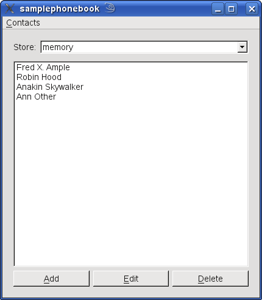
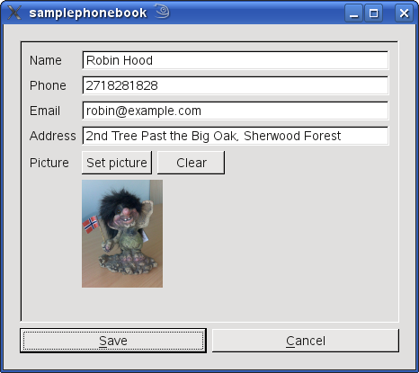
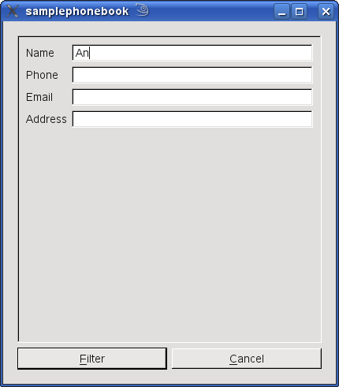
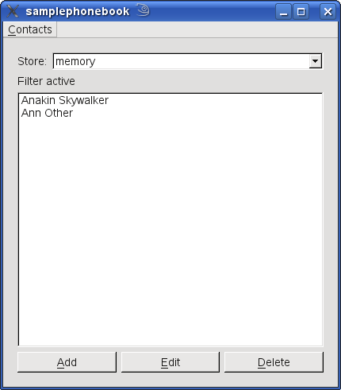

Files:
This example shows how to write a simple phonebook with the Contacts API.
This application was written to provide an example to developers of how to use the QtContacts and QtVersit APIs.
It provides an example of how to use the QtMobility libraries to:
[*] vCard is a registered trademark of the Internet Mail Consortium
Most people have a need to store information (such as addresses, telephone numbers and email addresses) of people that they know. This sample application provides a simple phone book that allows users to store certain pieces of information about their contacts, and save them to the contacts database of their device.
The application is designed to work on desktop and mobile platforms with minimal differences in code between the platforms. The interface is organized into a paged view, showing the Contact List by default. Contacts can be added, edited or deleted using the buttons at the bottom of the contact list. To search for a contact in the list, a filter can be applied using the Apply Filter item in the Contacts menu.
Here we see the Contact List with some names added.

When adding a new contact a new page is shown, with a Set Picture button to import an image. It is a good idea to use smaller images if you intend to export the contacts to a file later.

From the main menu, Contacts, you can select Apply Filter. This will display a new page which enables the user to specify filter criteria. In the screenshot below, we are selecting based on the first two characters of the Name,

which gives us a subset of the list of contacts.

To reset this, just select Clear Filter from the Contacts menu.
The contact list can also be imported and exported to the vCard format through the Import Contacts and Export Contacts items in the Contacts menu. This functionality can be used to populate the list from another device or application.
The example is not intended to be feature complete. Only a very limited subset of detail types are supported by the application. It exercises only a very small portion of the Qt Contacts API.
In particular: